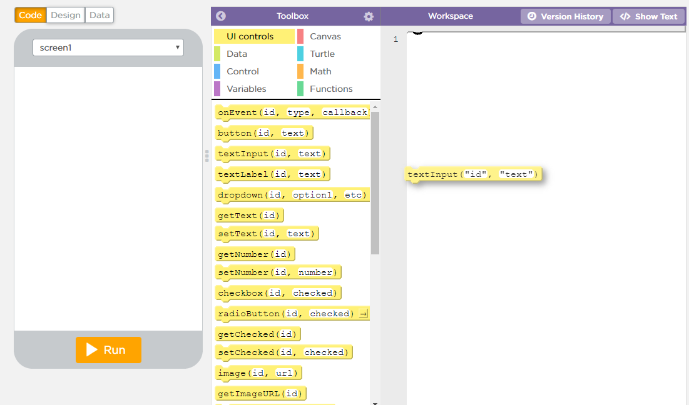

I dette forløb har vi brugt hjemmesiden code.org til at lave vores egen app. I forløbet har vi blandt andet lavet en valutaomregner og en BMI-udregner. Programmet brugte blokprogrammering, som vist på billedet til højre.

Vis indhold Gem indhold